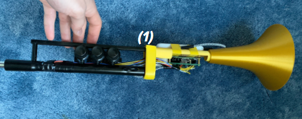

Future You — Authenticity Detector
A companion to MIT Media Lab's "Future You" project: records your face during future-self
conversations and flags moments of discomfort or disengagement, helping separate authentic
inner feelings from rehearsed, outward answers.
Status: flagship project — in development
KitchenEye
A stove-detector that alerts you when the stove has been left on and unattended for 5+ minutes —
started as a personal safety fix, being productized.
Status: existing project, productizing
Feel Seen
A desk camera that watches for restlessness and phone-scrolling, compares it against sleep data,
and flags when you're too tired or too sedentary to be productive.
Status: concept
The Louis — MIDI Trumpet

An affordable, accessible MIDI trumpet built to look, feel, and sound like the real thing —
so remote-learning students could get real practice-instrument access without the cost or
noise of an actual trumpet. Repurposes real trumpet valve springs and a real mouthpiece,
3D-printed body, Raspberry Pi + Teensy for signal processing, an I2S mic to read the
mouthpiece buzz, and valve sensors — all for under $150 in parts.
Senior capstone at Brown (ENGN 1001, Projects in Engineering Design II), April 2021.
Built with Riad Hallal, Nathan Plano, and Albin Wells.
Demo video (per the original report, unverified): tinyurl.com/The-Louis-Demo
Status: completed capstone project, 2021